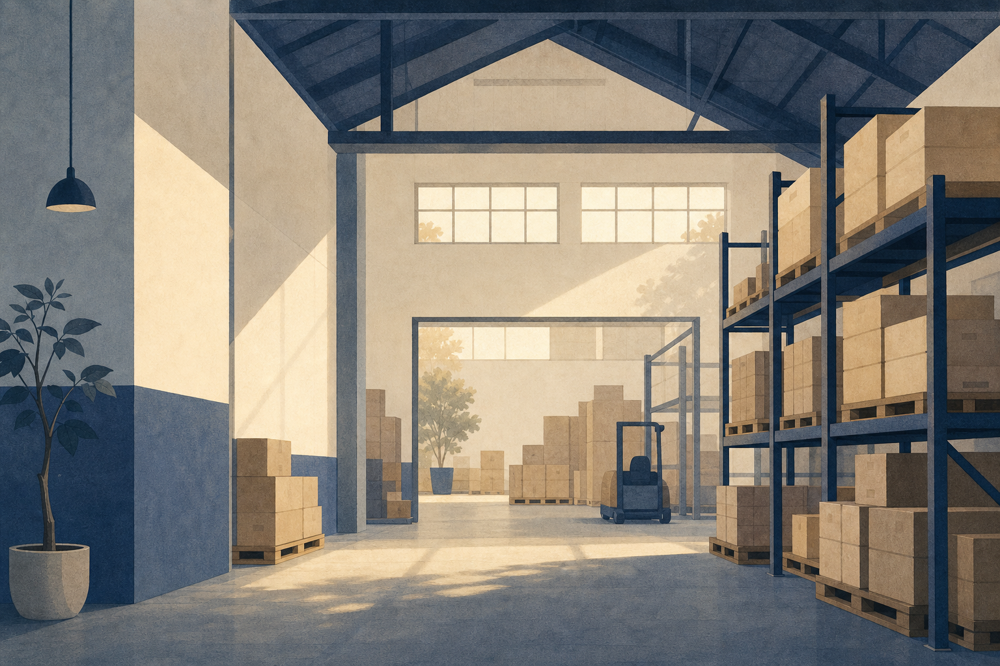

2008
Tasman Supply Chain founded in Wellington
Mo Tasman

Tasman Supply Chain Ltd was founded in 2008 in Wellington, born from a simple observation: that supply chains had become noisy, complex, and disconnected from the people they were meant to serve. Sixteen years on, we've coordinated freight and logistics for over 480 supply chains across twelve regions of Aotearoa — always with the same quiet philosophy: do fewer things, but do them with care.
I whakatūria a Tasman i 2008 — he nekehanga marie, he whakaaro nui.
Tasman Supply Chain founded in Wellington
First multi-region freight brokerage contracts
Supply chain consulting division established
Inventory & demand planning services introduced
Port and customs coordination capability added
200th supply chain coordinated
Rail and road transport partnerships expanded
Reverse logistics division launched
Sixteen years, 480+ supply chains, twelve regions
We believe the best logistics is the kind you don't notice — quiet, reliable, considered.
He nekehanga marie, he whakaaro nui
Managing Director
Head of Freight Operations
Supply Chain Strategy Lead
Client Relations Lead